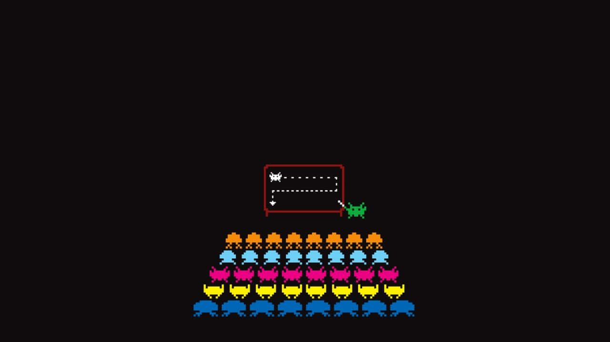
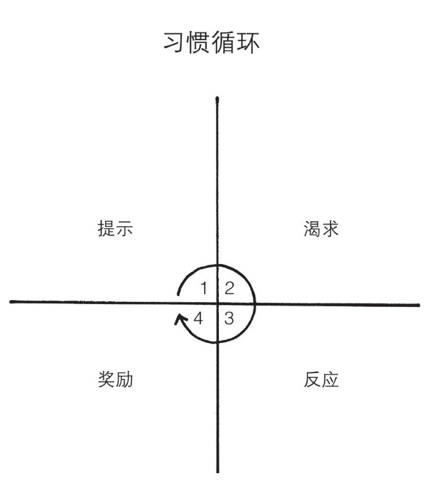
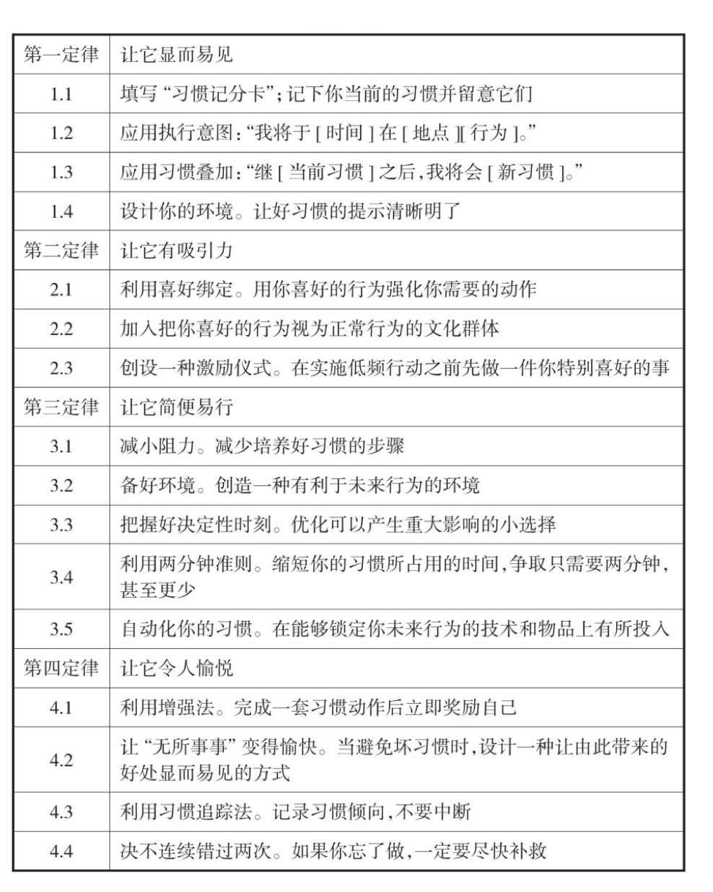
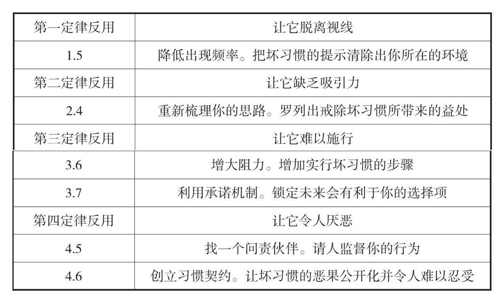
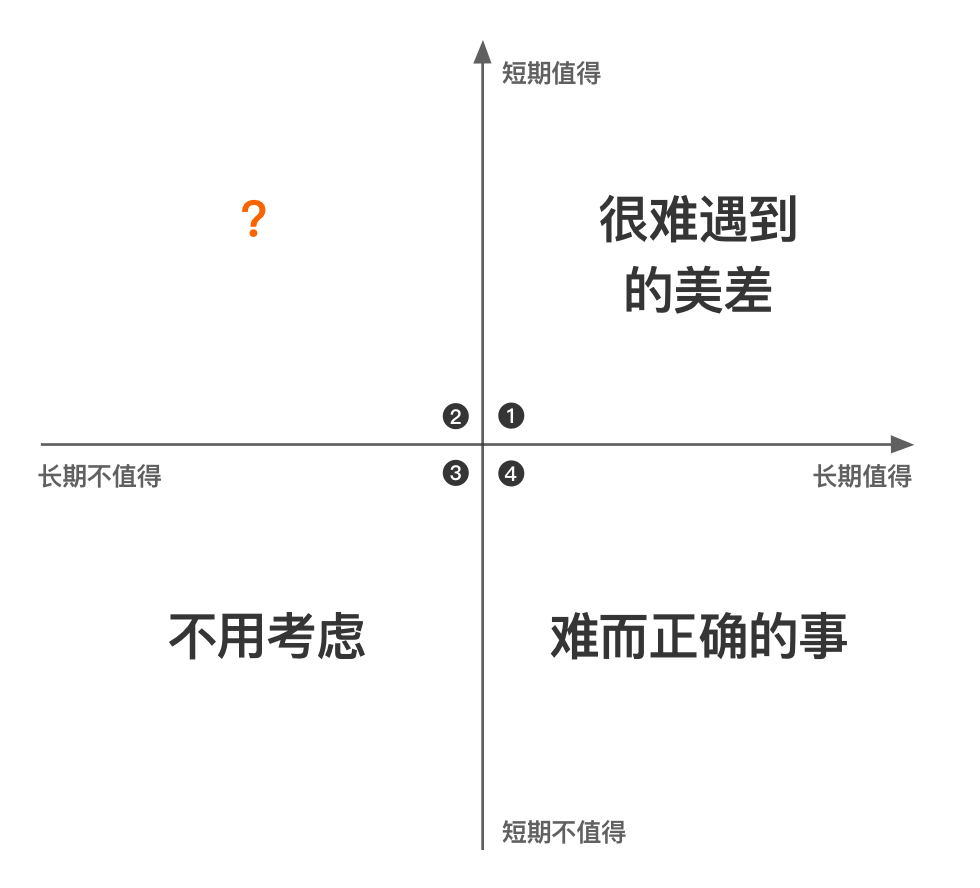
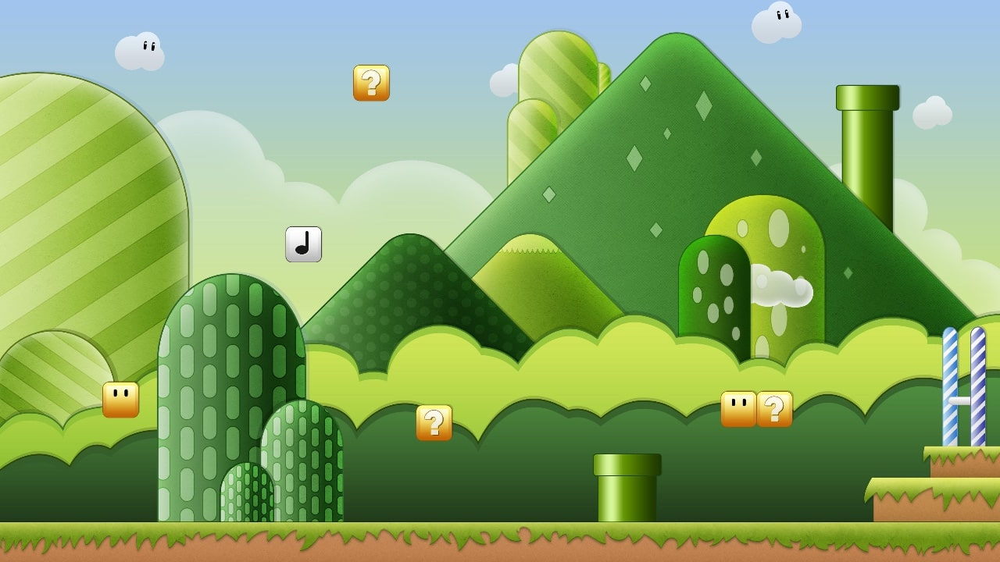
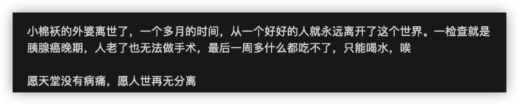

2023 年第二季度总结
这里记录下第二季度自己的一些想法，为了日后翻阅方便！
- 四月
- 关注弱势群体
- 蛙池乐队
- 而立计划
- 掌控习惯
- 长期主义
- 有效学习
- 城市
- 互联网创业变难了
- 五月
- 酒鬼的人生建议
- 让你感觉糟糕的事情都是借口
- 越长大越孤单
- 三个忠告
- 再谈辍学
- 裸辞后，我与焦虑和解了
- 我还是觉得编程很难
- 部署和维护开源软件的经验
- 六月
- 寻找知识的能力
- 永远不是成功的定义
- 花钱买速度
- 双向链接带给你误区
- 试着理解他们的牙痛
- 新技术的最大风险
- 永远向前，保持松弛感
- 新技术的最大风险
- 压力测试
- 做好当下的自己
- 写在疫情结束的半年
四月
思考下，你现在的生活是否是自己想要的生活？如果不是，应该怎么改变呢？
世界就是这样，有的人在思考自己的内心世界，有的人在思考自己的工作，有的人在思考自己的未来，有的人在思考自己，而有的人在思考世界。

一 关注弱势群体
在能够帮助残障人士的同时，还能够获得商业价值！
- [1] 给乳腺癌患者做文胸
即使做了二十多年内衣设计，于晓丹也从来没思考过这个问题——直到两年前，一位专做乳腺癌手术的美国医生找到她，希望她可以为这些女性设计一款在术后日常穿着的内衣。她由此踏上了和从前完全不同的设计之路。
当时市面上的选择不多，在找不到合适的内衣的情况下，很多患者会把以前的文胸拿出来，自己 DIY，缝一个夹层，放菜籽、绿豆、草纸、纱布、纱巾、手绢这样的填充物进去。“术后女性实际上是被现代工艺和审美忽略的一群人。”她决定做一些改变。
很多时候当我面对她们的伤疤，尤其是看到她们的眼泪时，我都不忍心责备她们的委曲求全，也更没有办法站在任何制高点上，批评她们的不勇敢、不抗争。 与其那样，我觉得我更应该用自己的专业能力，帮她们多解决一些实际的问题，成全她们的那些体谅之心。
- [2] 科技改善生活
2010 年开始，茅明睿和同事们开始运用大数据分析公共政策和城市开发对人群活动的影响，于是 2017 年我们邀请他来一席和大家分享了一些有趣案例：比如南锣鼓巷的游客什么时候最高兴，比如家住回龙观为何会感到身体被掏空，比如雾霾天气为何不同地铁站戴口罩人数不同等等。
几年过去了，茅明睿依然在观察着北京这座城市，观测着城里大大小小社区的变化，他们不断地为社区改善提出建议，也同时发现更多新的问题。
比如无障碍环境真的无障碍吗？盲人出行一趟会在哪些路口遇到哪些障碍？比如共享单车乱放乱停是谁的锅？比如在综合执法车上安装一个白盒子对于改善街道环境有用吗？……
他们综合大数据的分析，绘制了关于这座城市的知识图谱，努力用数据帮助改善社区和服务生活在社区中的居民。茅明睿所理解的城市的正义，是和生活在这里的居民一起完成的。
二 蛙池乐队
就像他说的，某一夜各位认识了我，但我并不是那一夜才活过来的！
2017 年，在东莞市虎门博涌物流中心，蛙池乐队成立，排练的时候，“旁边车间也在开工，噪音互不相让”。鼓手浩仔说，取名蛙池是因为以前的排练室外有一个废弃的池塘，有一年春天，一场暴雨过后，池塘里的小蝌蚪一夜之间长大，全部变成青蛙呱呱叫着跳了出来。
主唱依依，初中毕业的暑假在爸爸工厂的流水线上打工，为了挣到 1200 块买一把自己的吉他。毕业后，第一份工作也在工厂，虽然身份是白领，但有机会以更近距离去看看这些工人的生活状态：“鼻子里闻到的是那种浓度很高的人味，看到的是满眼厂服形状的人……他们使用手机的原则和习惯可以概括为：超级大声，外放超大声，对手机那头的人也喊超大声，他们的生活也因此超大声地渗透进我的。”
她开始观察他们的生活，写进歌里。
三 而立计划
只要你包装得足够好，哪怕一只鸡，也能成为网红！
你所看到的东西到底是不是真实的，还是别人所精心构建的？你在互联网上、朋友圈里包装一个精美的人设，到底有没有人关注？实际上我们得到的结果是，并没有很多人关注你。
- 霸榜畅销书单
一本中文书，霸占榜首亚马逊日本哲学类畅销书榜单。
- ins 南极第一网红
把贵州的一只乌金鸡打造成 ins 南极第一网红。
成为“而立计划”之前，他们都曾经是互联网“大厂”的员工，过腻了早八晚十的生活，决定在 30 岁之前一起辞职，做点好玩的事情，并把过程记录下来，发到了网上。
有人觉得他们在搞“行为艺术”，也有人从中看出了“社会实验”的意味。而对他们自己来说，上述种种都不是他们的初衷，相比于“无厘头”和大冒险，他们更想当中国的“凯鲁亚克”。
四 掌控习惯
忘记目标，专注于体系。
越不需要“坚持”就能做下去的事情，才越能长久做下去，背单词、跑步、学习，其实都是这个道理。简单的事情才容易坚持下去，促进事情的良性循环，最终让事情发生。

假如不需要经常自我克制的话，做起来就会更容易。所以，没错，毅力、勇气和意志力是取得成功的要素，但是增强这些品质的途径不是期望你自己成为一个自律的人，而是创造一个 有纪律的环境。消除坏习惯的最实用的方法之一是 避免接触引起它的提示，比如要少玩手机就想办法远离手机；反过来，想养成好习惯比如多喝水，就把水杯放在易接触的位置。
- 提示：让它显而易见
- 消除提示，习惯形成循环永远也不会开始！
- 原动力经常被高估，而环境的作用往往被低估
- B（行为）=f（函数）[P（人），E（环境）]
习惯是多巴胺驱动的反馈回路，每一种极可能形成习惯的行为都与较高浓度的多巴胺有关，比如玩电子游戏和手机。当你获得奖励时，大脑中激活的奖励系统，与你期待奖励时激活的系统是同一个。这就是对一种体验的期待往往比体验本身，更令人感到愉悦的原因之一。
引出了“喜好绑定”的原理：把你需要做的事与愿意做的事绑定。比如想培养健身的习惯，那么可以让自己在健身的时候同时看喜欢看的视频做为奖励。
- 渴求：让它有吸引力
- 降低渴求，就不会有足够的动力去行动！
”两分钟法则”：当你开始培养一种新习惯时，它所用时间不应超过两分钟。这样的策略也有另一个原因：它们强化着你想要建立的身份。如果你连续五天现身健身房，哪怕只在那里停留两分钟，你就是在为你的新身份投赞同票。
- 反应：让它简便易行
- 让行动变得困难，将无法付诸实施！
成就感是一个信号，它表明你的习惯有了回报，你为此付出的努力是值得的。这样做的结果是，它们强化着你的行为，并为任何活动增加一些即时满足感。
- 奖励：让它令人愉悦
- 如果奖励不能满足欲望，那么未来就没有理由再这样做了！
怎样养成好习惯

怎样戒除坏习惯

我的个人总结
养成一个好习惯，最重要的方式并不是说你应该怎么开始怎么结束。而是要告诉自己，现在就要开始，你现在做总比不做强，对不对？
而开始做某件事情或培养某个习惯的时候，最重要的并不是说应该有什么合适的条件，有什么合适的地点，而是我们应该怎么去做。需要注意的就是我们应该将复杂的事情简单化，就像上面说的那样将大事情分割开，然后慢慢养成。而不是一上来就给出一个非常宏大的一个愿景，结果这个愿景你只坚持了半个月。
不能坚持下的所有的习惯都是在做无用功，而这样的无用功做多了，对于你自己就是一个非常非常沮丧的事情，可能会严重影响到自己的生活习惯和处理问题的方法。
五 长期主义
记录看到的一些细节！
- 零一思维
前段时间，得到 APP 的电子书出了一个新 feature，它可以记录用户每天的阅读时间，你可以在电子书计划那设置每天的读书时间。我在其中设置的是每天阅读 45 分钟，它成为了我每天的阅读指标，但是有时候，我会发现自己为了完成目标量，而选择把电子书打开但不看，不知不觉用蒙混过关的方式刷阅读时间。阅读时间本身是为了激励我读书，反而变成了计数器导致的陷阱。
阅读量是 0，而阅读引发的思考，能解决的问题，带来的体验才是 1。都说学习要靠刻意练习，如果不注重方法，是在舒适区重复训练，那只能达到「练习」的效果，但往往忽视了「刻意」的重要性。殊不知「练习」再多都是 0，「刻意」才是 0 前面的那个 1。以此类推，写作的字数、更新频率都不重要，重要的是作者的思考，是内容中的信息增量。产出量是 0，思考量是 1。
具备「零一思维」，就能帮助我们在噪音纷扰的复杂事件中，保持冷静和理性，找到那个对我们长期价值最大的事。
- 长期主义
如果把零一思维套用在长期价值和短期价值的概念上，那么长期价值是 1，短期价值是 0。而「长期主义」就是看清了什么是 1，什么是 0 后，哪怕道阻且长，依然坚定不移地去做 1。
巴菲特有一句名言：“人生就像滚雪球，最重要之事是发现湿雪和长长的山坡。”长长的山坡，代表这个事情的可做空间很大，在未来有更大的升值空间；湿湿的雪，代表的是获取的利润和收益。长坡加上湿雪，就是复利。

长期不值得且短期也不值得，不用考虑；长期值得和短期值得，这份美差很难遇到，当我们遇到的时候，一定要反思，是不是哪里出了问题。
再来看看「长期值得，但短期不值得」，即做难而正确的事。短期内，看不到什么收益，但是持续去做，它会形成势能，在未来折现成更大的收益。比如从我打算更新公众号文章开始，我就在逐步积累自己的影响力，并且在这个过程中通过输出来倒逼输入和思考，完成进一步提升。关注我的人越多，我内在的创作动力也就越大，就能产出更优质的内容，然后吸引更多的人关注我。
我的读后感是，要正确认识自己做的事的长期性收益，或者叫前景。俗话说人无远虑必有近忧，但人要往前发展必须既要脚踏实地，又要志存高远。多抽时间思考一下自己到底在干什么，而不是刷抖音，对未来发展极端重要。
六 有效学习
你就能知道，什么才是「有效学习」！
看完一本书后，觉得写得好。但是问你哪里写得好？这本书讲了什么？又或者，你看完书之后，会记很多笔记，但是书里的知识点太多，你没有办法全部掌握。都花了时间认真做了阅读，如果能把读到的书，像写入计算机一样地录入大脑，过目不忘，该有多好？
费孝通在《乡土中国》里，把「学习」二字拆分开来说。所谓的「学」，就是出生后以一套人为的行为方式做模型，把本能的那一套方式加以改造的过程。所谓的「习」，指的是反复地做，靠时间来磨练，直到习惯于一种新的做法。
简单来说就是，学习的过程，是自我改造的过程。如果学习后，自己没有做出任何改变。那么学习是无效的。人会忘，手会生，通过学习完成自我改变后，还要持续地练习，才能巩固自己的学习。这样的学习才是有效的。
非常重要的一个观点： 看书、学新词的目的，就是获取你之前不知道的概念，然后映射到现实世界中的事物、现象和规律。你应该怎么找到有价值感的事？你不妨从三个方面来思考：能自主、能胜任和有归属。
- 记录：关键概念
你在阅读其它书籍的时候，一定要先去找关键的概念是什么。然后牢牢抓住这个概念，把它变成你的手电筒，去探寻它与后续内容的关系。最后，你还需要把这个概念记录在你的笔记里，成为你可以索引的源头。
一个概念对应一个笔记，笔记中方便你溯源，能通过时间和一些关键词搜到它就行。可以使用我们自己常用的笔记工具，制作成 Anki 或者 记录到 Obsidian 中。
- 连接：提问机器
其实不管课程还是书籍，他们的作用都是帮你解决你的问题。如果有的信息，你无法吃透，可能是因为你还没有到需要它的时候。是呀，学习的目的就是「为我所用」。
当提问的机器不再运转，就会导致自己失焦，什么内容都看；另一方面导致自己缺乏了实践的土壤，只能转述别人的观点，无法验证。
首先，你要从自身实际出发去提出问题；然后，你要带着这个问题去找相关的概念；最后，把这些概念进行连接和组合，最终构成解决问题的办法。
为什么要进行连接？因为信息和信息之间是有关系的，「自主」、「胜任」、「有归属」是并列的关系，然后被「内驱力」囊括。记录、连接、处理是时间的顺序关系。
- 处理：重构思考
对新知识的复制粘贴、收藏转发，并没有什么用。学习的本质是新的神经元和旧的神经元的连接，也就是新知识与旧知识的连接，通过联系自身，用自己的话对学到的知识进行重构，然后输出，才能完成对知识的消化。
成甲在《好好思考》中提到了一个「不读书法」：如果你看到了有意思的知识点，先合上书 10 分钟，然后问自己下面这些问题。
- 这个知识点用一句话讲是什么？
- 为什么给到我启发了？
- 能连接上我已有的知识和经验吗？
- 我能用一个类比来解释它吗？
- 我能把它运用到什么地方？
- 能自主
有的团队里的人，幸福感比较高，因为很多时候，团队 Leader 能讲清楚的就是这个事情的背景和为什么要做。至于怎么做，做到什么具体的内容，这个完全由他们来定。但也有团队的风格是完全由一个人说了算，所有的决策和细节都由 Leader 来拍板，久而久之，大家做事会依赖 Leader， Leader 会很累，团队里的人也不会去承担任何决策后果和责任，最后可能沦为没有自我意识的工具人。在工具层面，人容易被物化，然后丧失主动性。
你要考虑的是，这件事你是否有很大的自主决策的空间？怎么争取和扩大这个空间？你是否愿意选择带来的责任？如果答案是是，那就做。
- 能胜任
虽说我们都要建立自己的价值评价体系，但是能把一件事做好，正反馈很重要。如果能找到一些事，你能不断在里面得到正反馈，胜任感就会越来越大。
你要做的就是，尝试不同的事，然后找到自己相对擅长的领域，在里面找到胜任感。然后重点发展它，把它当成你的“后花园”。
- 有归属
我们能看到很多自媒体，用心做内容，然后通过内容来甄别和聚集一群认可他们的人，给别人提供价值的过程中，自然地获益，再好不过。
七 城市
什么样的城市让人幸福
城市首先是一个大型的人类居住地，这里永久性地聚集了大量的人口，在城市管理者所定义的地理边界之内，人们从事着非农业的工作。我们作为个人很难改变城市的环境，我们只能选择——选择一个让自己能够幸福生活的城市。
- 为车而建还是为人而建？
一个好的城市，或者说一个让人幸福的城市，一定是为人而建的。
- 通勤时间越长，幸福程度越低
一个人通勤时间的长短和幸福程度成反比，也就是说通勤时间越长，幸福程度越低。
- 自然与自然的多样性
任何一点自然的存在——自然光、自然景观、城市公园、乃至城市周围的国家公园，都能够给城市生活增加幸福感。自然不应当是奢侈品，而是一种必需品。 如果生活的城市没法选择，至少让自己有更多的机会去接触自然吧！
- 对自我身份的控制感
我做的这个选择是基于我自己的意志选择的吗？是我真心想做这件事，还是迫于外界压力而做的选择？
什么样的城市让我们幸福？以人为中心建设的城市、能够以较短时间较多方式通勤的城市、有与城市生活融为一体的自然的城市、能通过各种方式联结人的城市，但同时，还是一个能让我们能够自主选择身份的城市。
八 互联网创业变难了
一个老外发现，2010 年以后，美国没有出现过新的大型互联网公司。他就下了一个结论，2010 年以后的互联网创业，根本没有机会成为行业巨头。
那么，中国的情况呢？中国互联网巨头，大部分的成立时间不晚于 2010 年，但是有三个例外，分别是快手、字节跳动、拼多多。这三家公司中，快手和字节的核心业务是短视频，而短视频是 2010 年以后出现的。因此，传统互联网业务上能做大的新公司，大概只有拼多多一家。所以对于中国，上面的结论也基本成立：2010 年之后，互联网创业想要做大，机会急剧减少。
那个老外的解释是，只有在行业诞生初期成立的公司，才有机会成为行业巨头。 你想想看，微软和苹果成立于个人电脑的诞生初期；亚马逊、谷歌、脸书、腾讯、阿里成立于互联网诞生初期。最近一次创业窗口则是 2007 年到 2010 年前后，因为 iPhone 是 2007 年发布的，移动互联网时代来临。
新事物的诞生初期，是机会最多的时候。 因为没有竞争对手，而市场却在指数式增长，你简简单单做一个东西，都能吸引到大量用户。你可以探索各个方向，只要有一个方向对了，你就是那
五月
身体是自己的，工作就让它去死吧！
生病的时候，总会让人迅速将重心转移到健康上，然后就忘记了一切。

一 酒鬼的人生建议
总是被自己束缚的太多，而囚禁了自己！
我看过太多关于人生建议，自我提升，个人效率，思维模式的文章和书籍，坦白地说，我变化很大，其中最主要的，是我变得更焦虑了。
想要更轻松的活着，首先需要做的，也许是纵容自己和降低之际的标准。自私的人，总是 只为自己着想、弄丢你的东西 等，从不担心任何事，只要事情没有发生，完全不会影响到他。
所以，当你觉得一个人自私，放纵自己，神经大条时，也许他们正在快乐地享受人生，而我们也可以学着和他们一样。
二 让你感觉糟糕的事情都是借口
堆积的越多，越有理由不去做！
有这么多事情让我担心让我无法脱身，我就可以光明正大的晚睡晚起，不再锻炼，不再阅读，不再做我自己该做的事情。于是等到疫情结束，一年已经过半，而我什么都没有完成。
所以，与其被其干扰，不如写下这个清单，处理能处理的，接受不能改变的，然后把用来担心的时间，花在该做的事情上。
三 越长大越孤单
长大的我们和渐渐消失的好奇心
在告别学生时代，走进职场工作后，我们的读书时间越来越少了。闲暇时间，也许还能看一些文章（比如你正在看我写的这篇），听一些播客，看一些视频。
回顾我从一个陌生概念到逐渐了解的过程，驱动我持续深入的最大原动力，就是好奇心。好奇心被激发时，会同步刺激尾状核，然后分泌让我们快乐的多巴胺，进而让我们产生愉悦感。
- 消遣型好奇
- 主要表现于身体感官上对新事物的着迷
- 比如我们喜欢去不同的地方旅行，喜欢结交新的朋友
- 利用人类这样的好奇心，引导用户上瘾般地刷视频
- 认知型好奇
- 则是更深入、有序、有目的的内在驱动
- 转换关系
- 「认知型好奇」是由「消遣型好奇」转化而来的
- 你一开始只是通过音乐放松自己
- 某个契机，开始去研究音乐的节奏、乐器、乐理
好奇心是我们通往知识，总结规律的原初动力。但让人遗憾的是，随着年龄的增长，我们的好奇心会越变越少，再提不起读书的兴趣。它就像一只精灵，让人捉摸不透，在我们成长的不经意间，就消失不见。
- 内部原因：被岁月修剪
时间就像一把剪刀，它会自动修剪孩子脑中的无序和错误的神经连接分支。时间修剪了神经连接，也修剪了好奇心，直到成年后能自动化地去处理习以为常的问题。
我们接收到信息一定是有偏颇和误差的，人们更愿意接受和自己想法、立场一致的信息（认知偏差），因而逐渐封闭了自己的认知。因为社会规训，我们的好奇心被不断修剪；又因为忙碌，我们的好奇心被逐步耗竭。
- 外部原因：被技术截除
技术也一样，我们因为享受了技术带来的便利，就会付出相应的代价。凡有收益，必有代价。
微信让我们能随时随地与不同地方的人沟通和交流，相比以往的书信方式，它把我们的所处的世界扁平化了，手机就像我们身上延伸出的器官，通过互联网就能与别人的器官相连接。
高效、瞬时的连接的代价是什么呢？几个人面对面坐着，却因为微信各自通过手机在聊天，它截除掉的是我们抬头看世界，以及和现实身边人的沟通机会。
最高效的头脑往往最能放开去追随那些最幼稚的内心冲动。愿你永远保持一颗纯粹的好奇心，阅尽千帆仍如赤子一般探索未知，内心丰盈。
四 三个忠告
解决问题的三个忠告
大多数座谈会解决不了啥实际问题，没什么要紧的信息。要不不说，要么就是提一堆让公司解决。如果公司都给解决了，那要你干么呢？那如果公司不给解决，要公司干嘛呢？
－ 你已经是个成熟的成年人了，要学会自己解决问题
- 不要想捷径，下笨功夫，上帝偏爱笨人
- 最重要的是那些提出问题并能够解决问题的人
每个岗位都有自己的能力模型，有能者居之。如果你已经感到能力不够了，第一应该尽快提升这些能力，第二应该淘汰能力不合格的人，并找到能够补充这些能力的人。
- 资源不充足是常态
- 强迫使用创新的方法解决
- 通过构建更少和更好的软件功能减少改变的成本
- 时差和空间上的距离让我们在交流中更加有效(远程办公)
把约束变成优势，让匮乏带来创新。不是有句老话嘛，懒人改变世界。懒人怎么改变世界呢，用创新的方法提升效率，抵抗约束。
- 寻求帮助
- 如果超出能力范围和时间限制，那就要尽快求助他人
- 最好是求助你的上级，问题可能在他那里就不是啥问题
- 寻求帮助要有频率限制(招聘你来的目的何在)
五 再谈辍学
一般情况来说，阻力还是非常大的！
退学只是一种选择，没有人知道它是好的还是坏的。但它必定附带了很多随之而来的巨大的副作用。不是每一个人都有运气和实力和这些副作用抗衡。这个社会在一定程度上有少数派生存的空间，但社会的很多规则是设计给多数人的。抗衡需要勇气和付出比多数人多得多得多的心血。你准备好了吗？
衷心希望在作出了这样的选择之后的人，一定要努力成为那个别人口中的「幸存者」。用自己的力量去给偏见打一个沉重的巴掌吧。
六 裸辞后，我与焦虑和解了
拥抱自然，感受自由！- 链接
回过头来看我的 2022 年，焦虑、内耗以及迷茫几乎占据了大部分的时间。和生活在很多大城市的人一样，快速的工作节奏容易让人迷失其中，如同一个上了发条的时钟，逐渐失去停下来的勇气。生活就这么继续着，每一天从早上恋恋不舍离开被窝开始，到睡眼惺忪赶上熟悉的地铁线路，再奔向自己的工位，开始不知道几点能结束的工作。工作几年，经验渐长，却控制不住焦虑和迷茫。不断想通过工作实现的价值与意义并未按时到来，身体和心态却提前闹起了小情绪。如此糟糕的状态持续了很长一段时间，直到有一天我从地铁口出来，惊讶地闻到了阵阵桂花香，更惊讶于发现自己好像好久没有在好好在生活了。那是我每天上班必经的步行道，周围满是匆匆的脚步，少有人为此停留，我也是其中一员。就是在那个瞬间，我终于下定决心给自己放个假，做完手上这个项目就提离职。
离职后的我久违地享受了自由支配的 24 小时，各种摆烂之余，也开始对生活有了新的思考，尝试给自己把脉开药，重新认识下这个熟悉又陌生的世界。我给自己开了三味药，如果能给同样迷茫焦虑的你一些帮助，那就再好不过了。
想太多，做太少比你想象中更耗费精力
- 第一味药——尝试告别完美主义
- 要做预判，也要勇敢行动
- 我是个典型的完美主义者，拖延且纠结，虽然大多数时候我会拒绝承认。很多时候我就在纠结中度过了一天又一天，但是进度条却一直停留在 0%。近大半年的时间我都处于一种焦虑与纠结的状态。一方面是对未来发展方向的迷茫，另一方面长期加班的工作状态也让我疲于思考。
- 过去的经历让我习惯于给自己留退路，总要想到万全之策才会决定下一步行动。一拖再拖没有带来任何新的机遇与变化，反倒先拖垮了自己的精神状态。果然是“一鼓作气，再而衰，三而竭”。
- 是时候做出改变了，预判到可能发生的结果，能接受最坏的后果，想好了，那就勇敢行动吧。最近的这一年让我深刻体会到最耗费精力的部分往往就是在原地徘徊，思虑再三却不敢往前迈一步的时候。
- 迈出第一步最难，那最难的都克服了还怕什么
- 事实证明想的再周全在实践过程中你都可能遇到未曾设想的状况，但是这恰恰也是人生的乐趣不是吗？
- 有的时候，也许可以不那么完美主义，勇敢迈出第一步，之后就顺其自然吧。
- 开放心态去接纳，也许有惊喜呢
- 之前的我将自己框定在专业领域内，无比笃定这就是我热爱的，两耳不闻窗外事，全然不知世界的日新月异。学生思维下的我单凭一腔热血，看不见市场格局的变幻，也对将要面对的行业状况知之甚少。拿着手上的锤子，拼尽全力寻找钉子，对所有其他的可能性置若罔闻。
- 久而久之，周围结识的大部分人都有着类似的背景、类似的经历，甚至对于事情的观点都会出奇地一致。这使我开始感到恐慌，极力想去突破这张无形的网。
- 新的一年，以一个更加开放的心态去接触周围的人事物吧，也许只是上班路上新发现的一条路线，也许是新发掘了一个爱好，只要在路上，就还有无限可能。
很多东西也许你并不需要
- 第二味药——给生活做减法
- 给信息做减法
- 又是一个加班到全公司都快没人的一天，我打开熟悉的打车软件准备回家，进到车里就瘫在后座上，望着林立的高楼和街边林立的花花绿绿的店招，内心疲惫不堪，整个大脑处于宕机状态。回到家里，明知很晚很累却总是忍不住打开手机各类 app 开始刷新闻与信息，只想尽量延长这宝贵的自由时间。
- 不知道是不是很多人有过类似的经历，在高娱乐化内容刺激下短暂的愉悦感和之后巨大的空虚感之间反复横跳。
- 海量的信息与有限的时间让信息筛选在如今变得尤为重要。我们获取信息的手段更加便捷，每个人被大量的信息包裹，每天主动或被动地接收到各种各样相关的不相关的信息。可是每天还是只有 24 小时，如果沉浸在大量的信息中不加筛选，很容易就迷失其中，什么都要反而造成了失焦。
- 于是我卸载了大量的 app，精挑细选每天的信息摄入，重新找回了盖泡面的 kindle 充上了电，慢下来，去感受，去思考。目前实践下来感觉颇有成效，焦虑与空虚感都有了一定程度的缓解。
- 给消费做减法
- 消费之前先问问自己是不是非买不可，如果不买是不是也可以。
- 给时间做减法
- 我们需要给时间留白，也往往忽视了它的重要程度。
- 每个人从小开始就被教育要不停奔跑，初中努力考上重点高中，高中了班主任天天宣扬千军万马过独木桥，要好好准备高考，考上大学了又开始新一轮的拼，于是我们渐渐习惯了这种快节奏。
- 习惯于奔跑之后便少有时间愿意停下来思考人生的意义这种虚无又飘渺的话题，好像所有人都很忙，于是你也不自觉地加入，开始自己卷自己，不甘于人后。
- 工作后我每天忙着各种事物，一个项目还没结束下一个项目又将开始，在大公司里当一枚勤奋的螺丝钉。忙忙碌碌之后，却越来越焦虑和迷茫，仿佛是陷入了职业倦怠，但好像连带对生活的热情也消散了许多。
- 当我们拼命想要用忙碌榨干每一分钟时，时间的厚度却被不断稀释，看似忙碌却没有没有真正在思考创造。也许偶尔停下来，才能真正好好生活吧。
反正过去与未来都无法掌控，何不认真活好每个岁月
- 第三味药——活在当下
我发现我的大部分焦虑都来源于后悔之前的选择和对未来的迷茫，而这两个却恰恰是无法掌控的。懊恼过去没做好的，担心未发生的事情，却很少全神贯注于当下的事情，一旦没有得到正反馈就开始陷入焦虑。这便是我之前很容易陷入的循环。
开始直面它，并开始学习正念冥想。在这些过程中我终于找到了久违的心定的感觉，注意到自己的呼吸，听到耳边微微吹过的风，还有远处偶尔的几声鸟鸣。原来我曾忽略掉了这么多身边的美好。很多人可能跟我有一样的状态，活得拧巴且焦虑。所谓陷入瓶颈期大概率是因为悬浮在空中，没有真正活在当下吧。具体做什么没有那么重要，它们可能都只是通往探索真我的一个媒介而已。
我们一路奔跑想要追寻的美好生活，也许就是活好每一个当下。
焦虑的产生大部分源于对自己想要的不确定，或是想要的太多。给忙碌的工作按下了暂停键后，我好像才开始隐约触到了焦虑的根源。从敢于行动做出改变，给生活做减法，到活在当下，是现在的我想出的解法。如果人生是场修行，那学会和焦虑和解也许是我在新年学会的最重要的一课，之后更是需要不断练习。停下后再重新整装待发，到时候心境应该会不同以往了吧。不管你的状态是否允许你按下暂停键，但请你始终保持对生活的热爱。向外看，向内求，相信我们终会找到属于自己的答案。
七 我还是觉得编程很难
编程重来都不是一件简单的事情 - 链接
时光荏苒，一晃十几年过去了。如今回头一望，自己也成了一名有着 14 年工作经验的光荣打工人。在软件开发行业摸爬滚打这些年后，我发现很多事情，比方说：
- 随着经验增长，编程并不会变简单太多，“像吃饭一样简单”只出现在梦里
- 给许多“大项目”写代码不光没意思，还很危险，远不如在
LeetCode上做一道算法题有趣 - 只从技术角度思考问题，成不了好程序员，有些东西远比技术更重要
细想起来，这类关于编程的感触还有许多。我整理了其中 8 条，写成了这篇文章。
- 写代码很简单，但写好代码很难
编程早已褪去了它的神秘面纱，从只有少数人才能掌握的神秘技能，变成了一门人人皆可学习的普通手艺。但更低的学习门槛，更友好的编程语言，并不意味着人人都能写出一手好代码。
接触了更多软件项目后，我总结出一个道理，好代码还是很少：不论公司多大、项目多牛，在实际工作中遇见好代码，仍然是小概率事件。 作为评价好代码的原点：好代码一定是可读、易读，且容易理解的。写出好代码的第一原则，就是把人类读者放在第一位。除了可读性以外，评价代码好坏还有许多其他维度：贴合编程语言、易于修改、API 设计合理、性能够用、避免过度设计 等特点。
写好代码的捷径，在许多层面上，我认为编程和写作非常相似。二者都是使用文本和符号来表达思想，只是方式略有不同。提升编程能力的捷径，就藏在 “阅读 <-> 编程” 这个无尽循环里。
- 编程的精髓是“创造”
当你在编程时，创造新事物的机会实际上随处可见。因为并非只有发布一个新软件，才称得上是“创造”。写一个可复用的工具函数、设计一套清晰的数据模型，全都可以归入“创造”的范畴。身为程序员，保持对“创造”的热情至关重要。可以更好地帮助我们：更高效地学习、有机会邂逅了不起的东西。
一位哲学家询问正在砌砖的工人，有人清楚地知道自己是在建造一座大教堂，有人却认为自己只是在砌砖。很多程序员正是“只见砖块，不见教堂”。就像任何一个有用的编程模式一样，“创造者思维”也能成为你的职业生涯的一道巨大推进力。因此，现在就试着问自己一个问题吧——“我的下一份创造会是什么？”
- 打造高效试错的环境至关重要
一个人在这样的环境中工作，技术成长抛开不谈，心理素质肯定能得到极大锻炼。编程原本是一件充满乐趣的工作，但为这样的项目编程，乐趣根本无从谈起。究竟是什么夺走了编程的乐趣？
在 LeetCode 刷题很像在玩游戏，富有挑战性，同时也很有趣。整个做题过程，实际完美展现了一种理想化的编程体验：关注点分离、快速获得精准反馈、零成本试错。要通过改善环境来提升编程体验，可用的理念和工具包括：
- 模块化思想： 妥善设计项目中的每一个模块，降低耦合，提升正交性
- 设计原则： 微观层面上，应用那些经典的设计原则和模式，比如“SOLID”原则
- 自动化测试： 编写规范的单元测试，必要时使用 Mock 技术，用自动化测试覆盖业务关键路径
- 缩短反馈回路： 切换编译速度更快的工具，优化单测性能，竭尽全力缩短从“改完代码”到“获得反馈”的等待时间
- 微服务架构： 必要时，将大单体拆分为多个职责各异的微服务，分散复杂度
- ……
关注编程环境，刻意创造出允许高效试错的“代码乐园”，让工作像刷题一样轻松愉快。是经验丰富的程序员能为自身团队做出的最好贡献之一。
- 避开代码完美主义陷阱
在代码质量上精益求精是好事，但也要注意别掉进完美主义的陷阱。因为编程不是艺术创作，不鼓励人们无限度地追求极致。作家大可花上数年打磨一本传世之作，但程序员在代码上钻牛角尖就很有问题
- 技术很重要，但“人”也许更重要
在软件开发领域，“单一职责原则”（全称为 Single responsibility principle，后简称为 SRP）是一条非常著名的设计原则。它的定义很简单，一句话就可以概括：“每个软件模块应该只有一个被修改的理由”。
要掌握 SRP 原则，关键在于搞清楚“被修改的理由”为何物。很显然，程序是没有生命的，它自身不能也不需要主动去改变。任何修改程序的理由，都来自与之相关的人，人是导致修改的“罪魁祸首”。
- 求知若渴是好事，但也要注意方法
如今人人都在说“终身学习”，而程序员是一个尤其需要终身学习的职业。因为计算机技术的迭代更新非常快，某个三年前流行的框架或编程语言，很可能一个月前已经过时。要在工作中表现得游刃有余，程序员们需要学习的东西非常多，涵盖各个层面。
挑选合适的学习资料！有了学习目标后，下一步就是寻找合适的学习资料。回顾之前的经历，我觉得以下几本书非常适合门外汉学习使用，性价比极高：
- 《写给大家看的设计书》：设计相关
- 《点石成金》：Web 用户体验相关
- 《鸟哥的 Linux 私房菜》：Linux 系统相关
- 越早开始写单元测试越好
我非常非常喜欢单元测试，我认为写单测这件事，对我的编程生涯影响极大。夸张点说，如果以“开始写单元测试”作为分界线，把我的职业生涯分割成两段，后面那段远比前面那段精彩得多。
写单测的好处很多，比如单测可以驱动你改善代码的设计、可以作为代码的一种文档，等等。此外，完善的单元测试还是构建前面提到的 “高效犯错的环境” 的关键。 如果到目前为止，你从未试过写单元测试，或从没重视过测试，我建议你从明天就开始写起来。
- 程序员最大的敌人是什么？
虽然偶尔吐槽一两句产品经理很有意思，但我还是想一本正经的说一句：产品经理不是敌人。能否写出易于修改、适配变化的代码，是区分普通程序员和优秀程序员的重要标准之一。
那么，程序员们最大的敌人又是什么呢？复杂度是最大的敌人！就像《代码大全 2》中所说：软件开发的核心问题是管理复杂度，失控的复杂度就是程序员最大的敌人。
- 不断增加的新功能： 更多的功能等于更多的代码，更多的代码通常意味着更高的复杂度
- 对高可用的需求： 为了实现高可用，消息队列等额外的技术组件和代码被引入
- 对高性能的需求： 为了提升性能，缓存和相关模块代码被引入，部分模块被拆分后，换成高性能语言重写
- 一再被推迟的重构：因项目排期过于紧张，迫在眉睫的重构被一再推迟，技术债越积越多
- 忽视自动化测试： 没人写单元测试，也没人关心测试
- …
减缓复杂度增长的过程，虽然复杂度总是会不可避免地持续增长，但有许多实践可以减缓该过程。如果每个人都能做到以下这些事，复杂度就有可能被长期控制在合理范围内：
- 精通当前编程语言与工具，写整洁的代码
- 使用合适的设计模式和编程模式
- 对重复代码零容忍，抽象库和框架
- 适当运用整洁架构、领域驱动设计思想
- 编写详尽的文档和注释
- 编写规范有效的单元测试
- 分离那些变动的与不变的
八 部署和维护开源软件的经验
我发现我花时间最多的，就是用一个工具干不适合它干的事情！- 链接
- 技术选型
- 软件的可靠性
- 已经存在的时间
- 口碑及用户数量
- 软件的可扩展
- 是否有
API支持(内部集成方便) - 开放性(存储方式 可以迁移到其他方案)
- 是否有
- 决策指导
- 知识 - 对于相关技术点是否可以
hold住 - 信息 - 项目文档(最高效)、
Issue、社区讨论
- 知识 - 对于相关技术点是否可以
- 软件的可靠性
- 软件搭建
- 首次部署
ansibledockerk8s
- 解决依赖
- 存储
- 定制功能
- 首选官方支持的插件格式
- 下下策就修改源代码修改
- 软件升级
- 建议订阅官方的发布记录(
RSS) - 阅读版本
changelog修改决定是否需要更新
- 建议订阅官方的发布记录(
- 首次部署
六月
拒绝平庸，努力进取！
不工作了，发现自由真的很珍贵，但是需要自己有一个合理的规划才行，不让就变成了懒惰的动机。
一 寻找知识的能力
知识的力量 - 链接
寻找知识的能力是一个非常重要的能力，如果找不到，你就只能等着别人来投喂；如果找不对，那就会被误导。经典案例就是我的大学教材，我虽是 CS 专业，但误导了我很多年的就是两本教材：谭浩强的《C 语言》，让我写出很多 Bug，本校老师写的《算法》，让我多年不知道动态规则，它们都影响了我的职业成长……
所以，当我有一天看到外版经典图书的时候，我终于明白了什么叫被困在认识的牢笼……从那天后，我就被深深地改变了。
- 远离百度、公众号、知乎、微博等中国互联网
- 只看国外的文章和书籍
- 任何事都要找到正确和权威的知识源
- 不会让我的孩子再受这种无知的“山寨知识”的教育……
二 永远不是成功的定义
拒绝思维的定式 - 链接
我想了很多关于我们的文化是如何把 “永远 “变成了唯一可接受的成功的定义。
比如……如果你开了一家咖啡店并经营了一段时间，它让你很开心，但后来东西变得太贵，压力太大，而你想做别的事情，所以你将它关闭。这就是一个 “失败的 “生意。如果你写了一本书或两本书，然后决定你实际上并不想继续这样做，你就是一个 “失败 “的作家。如果你和某人结婚，并且婚姻在一段时间内是好的，然后感觉不对了，你们离婚了，这就是一个 “失败 “的婚姻。
唯一可以接受的 “胜利条件 “是 “你永远保持做那件事”。一段友谊持续了几年，一旦结束，它就会被认为是不那么有价值的或不是 “真正的 “友谊。你享受一个爱好，过了一段时间结束了，它就被称作是一个 “阶段”，或者说，是一种 “遗憾”。一群影迷 “正在消亡”，因为人们已经在其中获得了很多乐趣，但现在正在转向其他事情。
我只是认为，有些东西可以是好的，也可以是结束的。当它结束时，这个东西仍然是好的。对它的结束感到悲伤也是可以的，但是，认为任何结束的东西都会比它假设的永恒状态要差的想法….. 我不认为这对我们有任何好处。
三 花钱买速度
Notion 的天使投资人之一 Daniel Gross 在最近 一篇文章 里谈到他的消费观点
盲目地节俭使我无法花钱，这就造成了低效率。你应该像国王一样花钱买速度，像穷光蛋一样花钱买其他东西。更快的电脑？去买吧。更快的互联网？去买吧。更好的睡眠？去买吧。昂贵的晚餐？停止。而如果昂贵的晚餐是为了接近一个候选人？去买吧。如果你可以的话，利用你的资本来加快行动。你的竞争对手正在乘坐更短的航班。赶紧订票吧。
四 双向链接带给你误区
笔记本摇身一变成了我们的第二大脑了，人类可算进化成双核了。
用户使用一段时间，让双向链接多起来，再次点开脑图，密密麻麻的点又会告诉你，双向链接没那么神奇，只是你理解错了。
- 笔记软件 = 你的第二大脑
这完全就是一种错觉，只要不经常使用，一个星期准忘。倒是视觉模块，看见点状图，反应会很大，然后用户心理很舒坦。
- 知识是用来管理的
知识唯有通过使用，才能逐渐内化，没人会反驳这一点，但到了“强大”的笔记软件这里，咋又忘了。我们都很懒惰且贪心，容易上当。只有使用过，琢磨过，才能真正理解，理解了，才变成对于你而言，有用的知识。
- 软件要为了让用户感觉良好
先别着急记，学会自己归纳总结。
五 试着理解他们的牙痛
生活的思考 - 链接
所谓沦陷北平，是指 1937 到 1945 年间，处于日本军事占领状态下的北京。八年沦陷，对于历史中人来说，是漫长而绝望的等待。知识分子面临着道德的焦虑。离开北平的学者成立西南联大，留在沦陷区的文人学者，他们是怎么撑过这八年的呢？留在沦陷区的普通人又是怎么把日子一天天地过下去的？
假如我们把时间拨回到 1937 年 7 月，你身处即将沦陷的北平，是选择离开，还是留下来？这里说的是周作人的故事，他选择留在了北平。其后因接受了伪政府的一些列职务，以及随后的一系列行为使他被归入贰臣传的行列，而且被永远钉在历史的耻辱柱上。
- 要以生活作为基础，不然都是空谈！
我们对历史人物的道德评判，当然有不变的价值尺度，但是不是也受到某些偶然因素的影响。周作人说，道德固然好，但要以生活做背景。不顾人民的生死，空谈道德，是唱高调、说梦话。先要满足人民基本的生活需求，吃饱了，穿暖了，他才有工夫关心别人，想到国家。
- 普通人如何感受到外敌入侵呢？
普通人如何理解外敌入侵、军事占领意味着什么。普通人只有当最基本的生活秩序维持不下去了，自己或家人的生命安全受到严重威胁，才会猛然意识到异族支配的存在，意识到战争与我的关系，进而锁定个人和国家主权的关系。军事占领是在短时间内完成的，但沦陷造成的心理阴影，甚至作为一种生活状态却是长时段的。
- 对于普通人什么才是切身的历史？
周作人曾经翻译过俄国小说家安特莱夫的一篇短篇小说，叫作《齿痛》，我在 2020 年疫情初期读到了这篇小说，它击中了我。
故事发生在耶稣被钉上十字架那一天，一个耶稣撒冷的商人突然牙疼，疼得难以忍受。安特莱夫刻意不去正面描写耶稣如何受难，而是专注于这个无名小人物的牙痛。商人的妻子劝他去看耶稣行刑的过程，可以转移注意力，暂时忘记自己的牙痛。商人勃然大怒：“你没有看见我正在受苦吗？”
在牙痛的控制下，商人根本没有心情理会正在发生的历史。我们当然知道耶稣受难是改变世界史的大事件，但在商人看来，不能跟自己的牙痛相提并论。
“齿痛”在安特莱夫笔下是一个隐喻。大历史就在你我面前上演，我们却被突如其来的“牙痛”遮蔽了双眼、麻木了神经。在牙痛的控制下，大历史被我们有意无意地推远，甚至把它看作无关痛痒的闹剧。
每个人都有每个人的牙痛，作为大历史的亲历者，我们到底见证了什么，理解了多少？还是被困在个人的牙痛或小确幸中。我们怎么才能从自己的牙痛中探出头来、哪怕只是短暂地探出头来，试着去感受他人的牙痛；并在牙痛的间隙，努力理解身边或远方正在发生的历史。
正是基于这种困惑，我重新返回沦陷区，去感受普通人的悲欢离合，试着理解他们的牙痛。
六 永远向前，保持松弛感
不鸡血，不躺平，永远向前，保持松弛感。- 链接
但是思考，让我摆脱了躺平的想法，我需要的是一个积极健康的目标、心态，我不喜欢那些没有意义的高压力，有时候没事儿都要加班到深夜的鸡血，我需要的是松弛感，但是保持前进。这可以做到么？其实完全可以。
解药从来都是如何提高自己的效率，是去持续学习，用知识和认知的跃迁代替无休止的，低层次的竞争。这是《如何用一年时间获得十年的经验》里面我强调的。
精力不来自于每天喝三杯咖啡，十瓶红牛，而来自于对自己的目标感的把握，来自于对无聊的网络骂战和情绪反应的逃离，这我在《30 分钟原则和不争论原则》里面讨论的。
最近这些年，我都在思考如何找到一条既可以保持高效，持续成长，持续学习，又可以保持松弛感的道路，今天已经开始发售的这本书，就是我介绍给大家的，我的解决方案。这本书的名字就叫做《松弛感——拒绝紧绷，允许生活中的不确定》
七 新技术的最大风险
工程师后悔使用了新技术
读到三篇文章，都是工程师后悔使用了新技术。上面三种新技术都是最近 10 年诞生的，当时都号称解决了开发的重大问题，看上去很有希望。 因此，一诞生就成了热点，非常吸引眼球，有些工程师就都采用了。
如果你是开发工程师，一看这些技术特点，大概立刻就会心动。但是，当你真把它们用在生产环境，各种问题就会慢慢暴露出来，几年以后你可能就像上面的文章作者一样后悔莫及。等到后悔了，想要更换技术栈，就晚了。上车容易下车难，项目都持续投入好几年了，再修改架构谈何容易。这件事的教训，就是使用新技术要谨慎。新技术有一个最大风险，往往被忽视，那就是它们没有经过足够的使用，问题都没有暴露出来。
很多的新技术，看上去可以节省前面 20%的开发成本，但可能大大增加后面 80% 的维护成本。现实生活中，那么多企业选择 Java，而不是那些时髦花哨的新技术，原因就在这里：Java 是经过考验的，不会出现奇怪的问题，有良好的长期维护，企业长期使用的风险和成本相对较低。如果开发者真为自己考虑，想将来简单一点，不必每天为复杂奇怪的技术问题操心，应该优先选择那些可靠的老技术，用于公司的长期项目。
老技术的问题是，它很乏味：所有可能性都被探索过了，创造发挥的空间不大。很多程序员（尤其是新程序员）因此觉得，老技术展现不了技术能力，也不够好玩，新技术更有乐趣，对自己的提升更大。这种想法并没错，但前提是你的项目不需要长期维护，否则使用未经考验的新技术是非常冒险的。
八 压力测试
几年前，我参加 IBM 的面试，有一个其他地方没有见过的特殊测试。
面试当天，20 多个面试者来 IBM 办公室接受各种测试。面试官说要进行”小组测试”，我们大约 8 个人一组被带到一个房间，被要求一起解决一个难题。我们都拿到一张纸，上面写着问题的相关信息，每个人得到的信息都不一样，还有一块白板，以及一个 60 分钟的计时器。
起初，我们所有人看着纸，一片寂静。然后，有人开口说：”让我们汇集信息吧”，站在白板旁边，拿着一支记号笔。大家都在沉默，不清楚应该如何分析自己拿到的信息。一个人开始逐字朗读他拿到的信息。过了一会，有人打断他。再不久，负责写白板的人被罢免了，另一个人夺过记号笔，然后有人站起来争夺记号笔。
时间一分一秒过去，我们依然没有进展，大家开始感到焦虑。60 分钟很快到了，问题仍然没有解决。困惑和筋疲力尽的我们前往下一个测试。等到一天的面试结束，所有人被分成两个房间，我所在的房间收到了好消息，通过了今天的面试。
六个月后，我遇到了一位”小组测试”的同事。我问他是否见过某个小组完成了这种测试？他说：”哦，那个不是为了测试是否解决了问题，而是一个压力测试，看谁在压力下变成行为失常。那些举止失措的人，不会进入下一轮。”
九 做好当下的自己
愿天堂没有病痛，愿人世再无分离

十 写在疫情结束的半年
时代的一粒灰尘落在个人身上就是一座山，不幸的是：我们偏偏却活在一个尘土飞扬的年代。如果要对三年防疫做一句总结的话，我愿意称之为一场政治运动型的防疫闹剧。
防疫闹剧
- 思想审查、文字狱、集中营、白色恐怖、谎言欺骗，这些并没有因为疫情结束而消失，每天的感触就像是在历史与现实的夹缝中苟活，对未来充满着无限的恐惧。
- 经历了这场灾难之后，我们或多或少地能感触到一个国家的政治气候的变化是如何深刻地影响和限制人类生存的状态和生存的可能。在某些性命攸关的时刻，政治它直接或间接地决定了我们还能不能在这个世界生存下去。
- 从去年上海封城到现在，在这一年多的时间里，博客已经很少再更新了，也慢慢地淡出了推特。除了正常的工作生活外，大部分时间和精力都是在研究和思考这个国家和社会为什么会上演着一场场荒诞至极的防疫闹剧。结合这三年防疫闹剧期间所发生、暴露出的一切，以及自己的生活感受，我越来越有一种想探究这场防疫闹剧的政治基础是如何一步步建立起来的想法。
读书笔记
- 孔飞力《叫魂：1768 年中國妖術大恐慌》
- 社会上到处表现出冤冤相报的敌意
- 高华《历史笔记》
- 民族主義經常吞噬民主主義
- 大跃进运动背后的政治逻辑
- 向党交心运动十分有有意思
- 杨继绳《墓碑：一九五八—一九六二年中國大饑荒紀實》
- 任何災難都可以被用來塑造成正確的集體記憶
- 孔飞力《叫魂：1768 年中國妖術大恐慌》